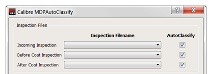

A blank mask passes through the cleaning
and coating mask preparation stages. For continuous monitoring of
the state of the mask blank, inspections are performed corresponding
to each of the preparation stages. On the whole, three inspections
are performed on a mask blank.
The types of inspections
are as follows:
Incoming inspection —
The inspection performed on the blank as it is received from the
blank mask vendor.
Before Coat inspection —
The inspection performed after the cleaning stage. This is also
called “After Clean inspection”.
After Coat inspection —
The inspection following the application of a resist coat on the
blank mask.
Calibre MDPAutoClassify has been designed to run together or
selectively on the three inspections and interpret the defect classification
accordingly. Further information can be found in “Defect Source Type Classification”.
Procedure
- After invoking Calibre MDPAutoClassify,
in the Inspection Files section, for each of the mask preparation
steps (Incoming, Before Coat, and After Coat), select a corresponding Inspection
Filename and click the MDPAutoClassify check box to enable auto-classification.
Figure 1. Inspection
Files
The inspection file name is selected from a drop-down menu of
all the loaded inspections in Calibre DefectReview. However, if
the inspection data corresponding to a specific mask preparation
stage is not available, the Inspection Filename field can be left blank.
For example, if, for a blank mask, only the cleaned and coated inspections
are available, then the field corresponding to Incoming inspection
can be left blank. By default, inspection numbers 1, 2 and 3 (the
first, second, and third inspections in the order of their loading)
are respectively considered as Incoming, Before Coat, and After Coat
inspections.
The AutoClassify check box provides an option for to skip automatic
defect classification for the unchecked inspection. An example scenario
is when an Incoming inspection is to be used as a reference for
defect classification of a Before Coat inspection, but it does not
need go through classification again since that step has previously
been completed. Only the results from an earlier run are required;
the defect classification process is redundant. If no inspection
filename has been specified for any of the inspections, the corresponding
check box status is ignored
- Proceed
to the steps detailed in “Setting Up Common Defects Controls”. However,
if the requisite inspection has not been loaded:
- Close
the Calibre MDPAutoClassify dialog box.
- Load
the required inspections through the Add Inspection(s) option in
Calibre DefectReview. Detailed instructions regarding this option
can be found in the Calibre DefectReview User’s Manual.
- Re-launch
the Calibre MDPAutoClassify dialog box.